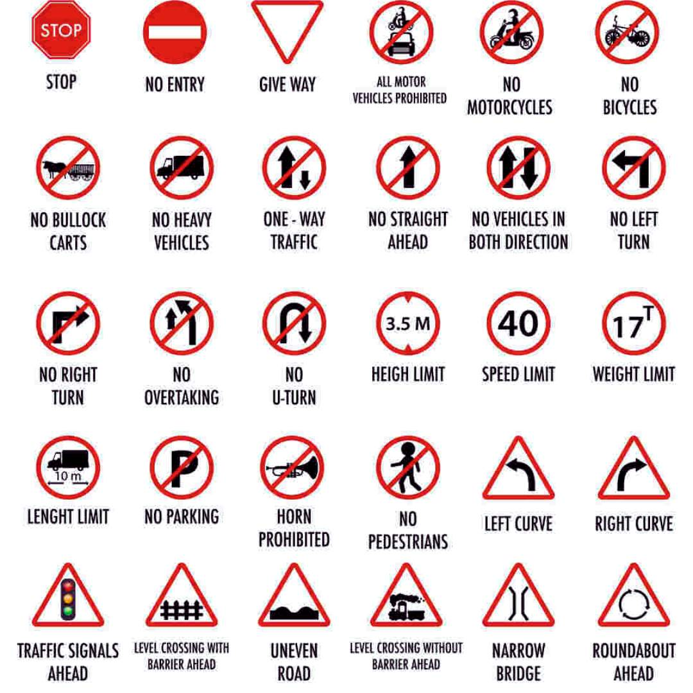

Follow Rules | Save Lives | Stay Safe
Road safety rules are essential guidelines that help protect the lives of all road users, including drivers, passengers, cyclists, and pedestrians. With the rapid increase in urban traffic and vehicles, the chances of accidents have also increased significantly. These rules are created by authorities to maintain order, discipline, and safety on roads. Following road safety rules helps in reducing accidents, preventing injuries, and ensuring smooth traffic flow. Simple habits like wearing helmets, fastening seat belts, and obeying traffic signals can make a huge difference. Road safety is not just a legal duty but also a moral responsibility of every individual to protect their own life and the lives of others.

| Sr. No | Sign Name | Description |
|---|---|---|
| 1 | Stop | This sign instructs drivers to come to a complete halt before proceeding. It ensures safety at intersections, pedestrian crossings, or junctions where visibility or traffic control is necessary. |
| 2 | No Entry | This sign prohibits vehicles from entering a particular road or area. It is placed to control traffic flow and prevent congestion or accidents in restricted zones. |
| 3 | Give Way | This sign tells drivers to slow down and give priority to vehicles on the main road. It helps avoid collisions by ensuring orderly movement at intersections. |
| 4 | All Motor Vehicles Prohibited | This sign restricts entry of all motor vehicles including cars, bikes, and trucks. It is usually placed in pedestrian zones or environmentally sensitive areas. |
| 5 | No Motorcycles | This sign indicates that motorcycles are not allowed on the road. It is used in areas where noise control or safety concerns require restricting two-wheelers. |
| 6 | No Bicycles | This sign prohibits bicycles from using the road. It is commonly placed on highways or busy roads where cycling could be dangerous for riders. |
| 7 | No Bullock Carts | This sign restricts animal-driven carts from entering the road. It ensures smooth traffic flow and prevents slow-moving vehicles from causing congestion or accidents. |
| 8 | No Heavy Vehicles | This sign indicates that heavy vehicles like trucks and buses are not allowed. It is used to protect narrow roads, bridges, or residential areas. |
| 9 | One Way Traffic | This sign shows that traffic is allowed only in one direction. It helps manage traffic efficiently and reduces the chances of head-on collisions. |
| 10 | No Straight Ahead | This sign informs drivers that moving straight ahead is not allowed. They must turn left or right as indicated to follow proper traffic rules. |
| 11 | No Vehicles in Both Directions | This sign restricts all types of vehicles from both directions. It is generally used in areas where road access is completely closed or restricted. |
| 12 | No Left Turn | This sign prohibits drivers from taking a left turn at the junction. It is used to control traffic and avoid congestion or unsafe turning movements. |
| 13 | No Right Turn | This sign indicates that right turns are not allowed at the intersection. It helps maintain smooth traffic flow and reduces the risk of accidents. |
| 14 | No Overtaking | This sign warns drivers not to overtake other vehicles. It is placed on narrow roads, curves, or areas where overtaking can be dangerous. |
| 15 | No U-Turn | This sign prohibits U-turns at that location. It ensures safe movement of traffic and prevents sudden turning that may cause accidents. |
| 16 | Height Limit | This sign specifies the maximum height allowed for vehicles. It is usually placed before bridges, tunnels, or structures where tall vehicles may not pass safely. |
| 17 | Speed Limit | This sign indicates the maximum speed permitted on the road. Drivers must follow this limit to ensure safety and avoid penalties. |
| 18 | Weight Limit | This sign shows the maximum allowable weight for vehicles. It is used to protect roads and bridges from damage caused by heavy loads. |
| 19 | No Parking | This sign indicates that parking vehicles is not allowed in that area. It helps keep roads clear and ensures smooth movement of traffic. |
| 20 | Horn Prohibited | This sign restricts the use of horns in the area. It is usually placed near hospitals, schools, or silent zones to reduce noise pollution. |
| 21 | No Pedestrians | This sign prohibits pedestrians from walking on the road. It is used on highways or dangerous zones where walking could lead to accidents. |
| 22 | Left Curve | This warning sign indicates a sharp or gradual curve to the left ahead. Drivers should slow down and drive carefully to avoid losing control. |
| 23 | Right Curve | This sign warns drivers about a curve to the right ahead. It helps them prepare by reducing speed and maintaining proper control of the vehicle. |
| 24 | Traffic Signals Ahead | This sign indicates that traffic signals are ahead. Drivers should be ready to stop or follow signal instructions for safe and controlled traffic movement. |
| 25 | Uneven Road | This sign warns about an uneven or rough road ahead. Drivers should reduce speed to avoid damage to vehicles and ensure a comfortable ride. |
| 26 | Roundabout Ahead | This sign indicates a roundabout ahead. Drivers must slow down, follow circular movement rules, and give priority to vehicles already inside the roundabout. |
General awareness about road safety plays a very important role in reducing accidents and improving road conditions. People should be educated about traffic rules, safe driving practices, and the importance of discipline on roads. Awareness campaigns, advertisements, and educational programs help in spreading knowledge among the public. Drivers should stay alert, avoid distractions like mobile phones, and always focus on the road. Pedestrians should also be careful while crossing roads and follow safety rules. By increasing awareness, we can create a responsible society where everyone contributes towards safer roads.
Drivers and pedestrians both have equal responsibility in maintaining road safety. Drivers must follow traffic rules, maintain proper speed, use indicators, and respect other road users. They should avoid rash driving and always stay alert. Pedestrians should use footpaths, cross roads only at zebra crossings, and avoid sudden movements. Cooperation between drivers and pedestrians is essential for preventing accidents. Responsible behavior, patience, and discipline help in creating a safe road environment for everyone.
Road safety is a shared responsibility that requires awareness, discipline, and proper behavior from everyone. By following simple rules and guidelines, we can significantly reduce accidents and save lives. Urban Safety Drive aims to spread this awareness and encourage people to adopt safe practices. Every individual must understand that safety comes first and should never be ignored. Together, we can build a safer and better society by making our roads secure for everyone.